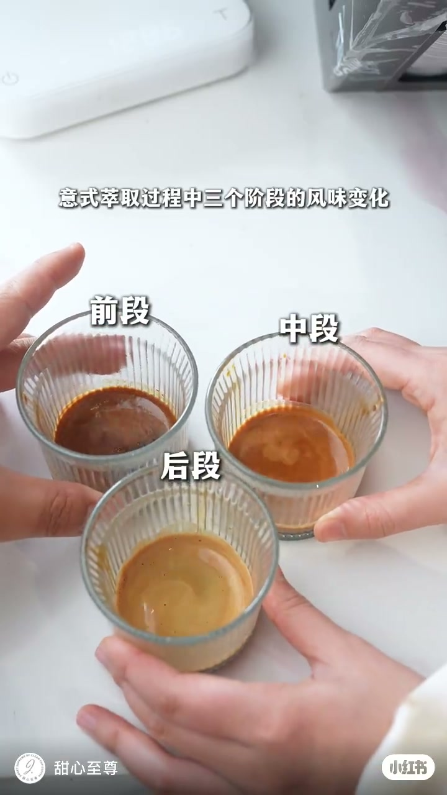
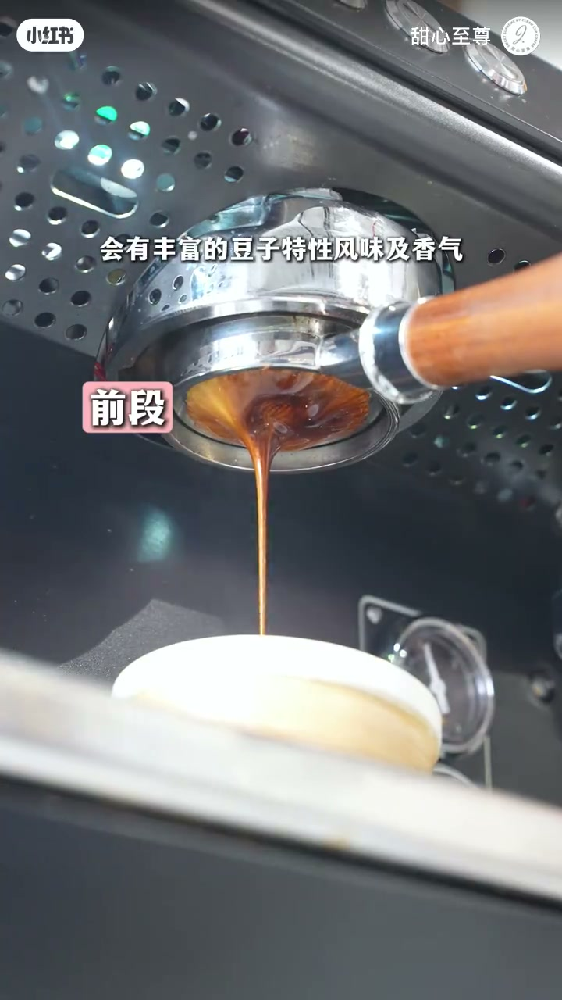
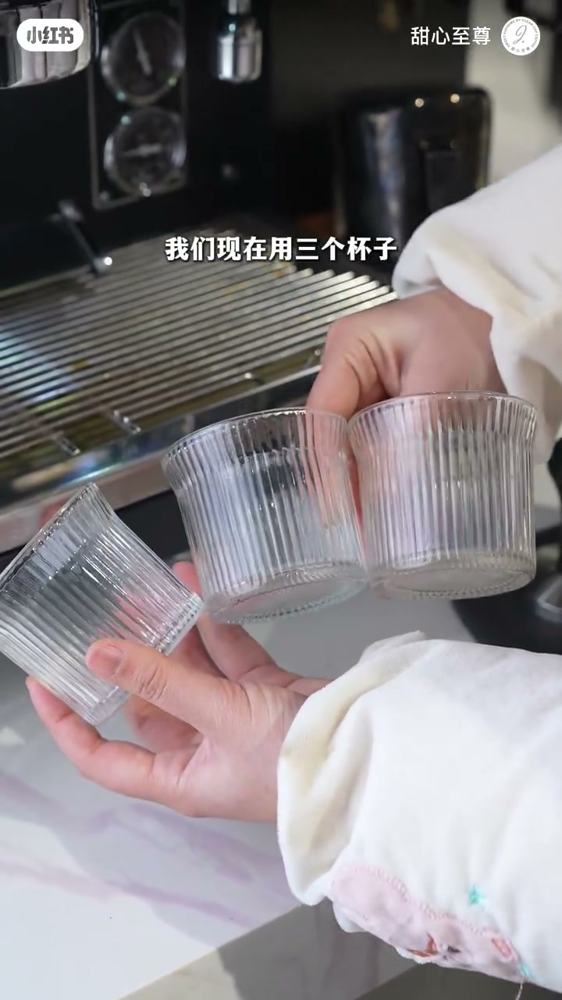
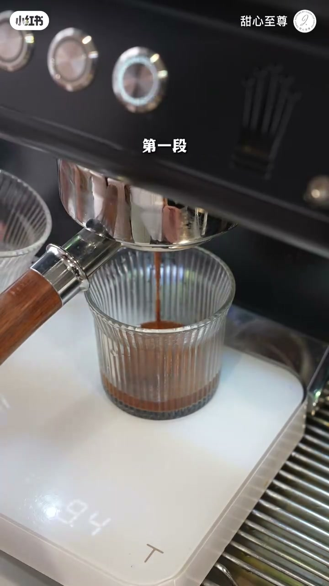
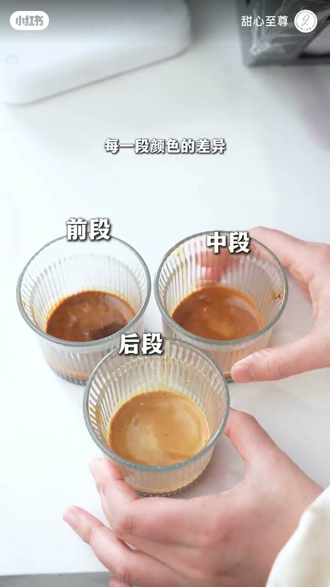
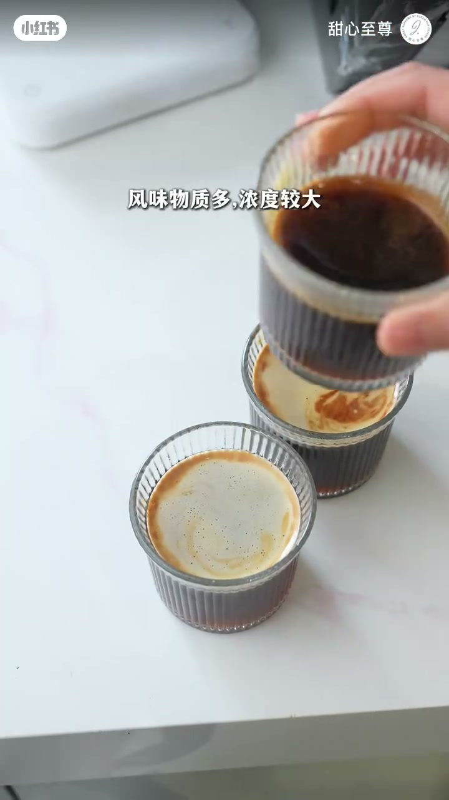

内容要点
知识结构
前段：颜色最深、流量小，豆子特性风味与香气丰富，酸度高。中段：甜味，坚果、奶油、焦糖。后段：颜色变淡，苦味与杂味出现。
前两段都是好风味，但前段酸与中段甜不一定能很好融合；作者认为需要尾段的苦来稀释它们，让浓缩得到整体风味平衡。
用三只杯子分别接取；从油脂颜色看：第一段最深「像」过度萃取，第二段正常，第三段最浅「像」萃取不足——这是观感类比，不是直接判定整杯过萃/欠萃。
前段以酸质为主、风味物质多、浓度大；中段酸度下降、可溶物减少但甜味明显；尾段可萃取物质趋于饱和，口感上几乎只剩焦苦。
浓缩不是「全程同一杯味道」：前酸中甜后苦各司其职；按作者观点，尾段苦是用来把前两段拉进整体平衡的，可用三杯分段 + 加水对照自己验证。
图文实录
开场：前酸、中甜、后苦
视频标题直接落在「意式萃取过程中三个阶段的风味变化」。开场画面已摆好三只棱纹玻璃杯，分别标前段、中段、后段，颜色一眼从深褐过渡到浅金——后面的口播都是在给这张「色阶」配感官解释。
前段：颜色最深、流量小，会有丰富的豆子特性风味及香气，酸度高。中段主打甜味，并点出坚果、奶油、焦糖一类描述。后段颜色变淡，苦味和杂味开始呈现。画面切到无底手柄特写时，字幕依次钉住「前段 / 中段 / 后段」，让观众把流速、颜色和口感标签绑在一起。


论点转折：为什么还要尾段的苦
作者先肯定「前面两段都是好的风味」，随即补上一句容易被忽略的限制：前段的酸和中段的甜，不一定能够很好融合。于是引出本片的核心观点——
这里要分清立场：这是作者对意式浓缩结构的主观解释（尾苦作「稀释/平衡」），不是实验室里的唯一标准配方。后文用分段杯来让观众自己尝到三段差异，等于给这个观点做可视化证据。
演示：三杯接取 18 克粉 → 36 克液
操作设定很明确：用三个杯子分别接取三段；粉量 18 克，总液量 36 克，每段大约 12 克。画面里作者双手持三只空棱纹杯站在机头前，随后第一段流入秤上的杯子，字幕依次打出「第一段 / 第二段 / 第三段」。


接完后，作者让观众「从油脂颜色」看差异：第一段颜色最深，观感「像」过度萃取；第二段颜色正常；第三段颜色最浅，「像」萃取不足。注意措辞是颜色类比，不是说整杯浓缩已经过萃或欠萃——分段本身就会让前段更浓、后段更淡。

加水对照：酸质、甜味与焦苦
三杯分别加入同样的水，再谈风味差异（画面有短暂无口播的注水动作）。稀释后：前段以酸质为主，风味物质多、浓度较大；中段随着酸度减少、可萃取物质减少，却仍有明显甜味；最后一段「可萃取的物质已经达到饱和」，口感上几乎只剩焦苦味。

收束时，开场的色阶、中间的三段标签、结尾的加水品鉴连成一条线：浓缩的「一杯」其实是前中后三段叠加的结果；按作者说法，尾段苦不是多余杂质，而是把酸与甜拉进整体平衡的一笔。